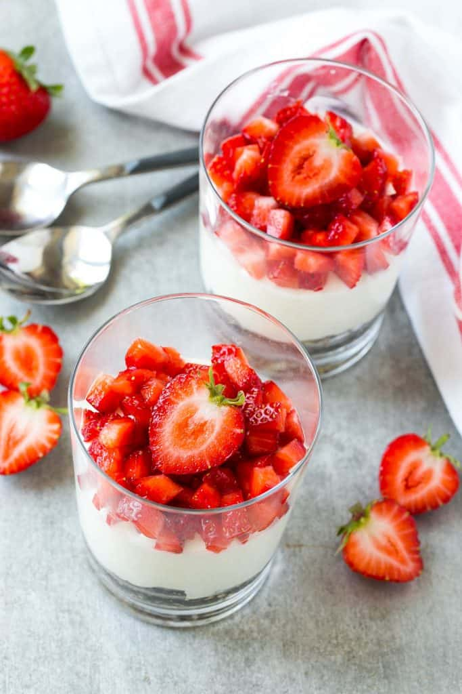

Cheesecake cup recipe
Home

This easy No-Bake Cheesecake Cups recipe is a healthier dessert option that’s full
of protein, very easy to make, and ready in minutes. Make this and have it for breakfast,
dessert, or snack!
No-bake cheesecakes are so fun and easy to make. No to mention so convenient!
Hassle-free desserts that are ready in minutes are ideal for those who are busy and
have no time to bake. These easy no-bake cheesecake cups are delicious and full of
nutrition and protein. Could be served as a delicious breakfast, midday snack, or
dessert. Also, you can top it with any of your favorite fruits and enjoy this good
for your cheesecake!
Ingredients:
- Rolled oats
- Pecans
- Cinnamon
- Melted coconut oil
- Low-calorie granulated sweetener or honey
- Whey protein vanilla flavor
- Light cream cheese softened
- Vanilla extract
- Vanilla Greek yogurt
- Berries or mixed fuit
Directions:
- First, place the oats and pecans in the bowl of a food processor; pulse until the oats and nuts are coarsely chopped. Transfer the mixture to a bowl and stir in the cinnamon, coconut oil, and sweetener.
- Then, divide the oat mixture between 4 cups, pressing the mixture down with your fingers.
- Chill for 20 minutes.
- Next, beat the cream cheese with a mixer until fluffy. Add the protein powder, vanilla extract, Greek yogurt, and sweetener. Beat until thoroughly combined.
- Divide the cream cheese mixture between the 4 cups. Chill for one hour. Finally, top with fruit and serve.
Home